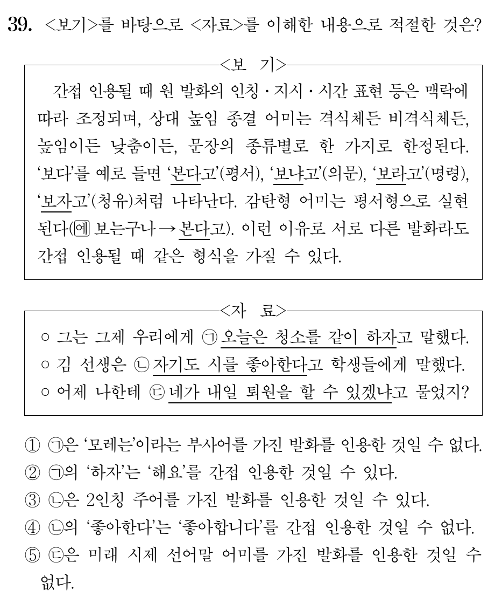

탐구 활동
높임의 대상
수능 기출
화법과 언어 · 3. 문장과 담화, 국어의 변화
높임 표현,
직접 써 보기
(1) 문장의 짜임과 문법 요소 · 3차시
도입 · 모둠 편성 (2분)
4~5명씩 여섯 모둠으로 앉아요
기록자
모둠의 답을 활동지와
미니 보드에 적어요.
발표자
답과 근거를 말해요.
활동마다 돌아가며 맡아요.
시간 지킴이
남은 시간을 알려 주고
모둠을 이끌어요.
모둠 친구 모두가 한 번씩은 말하기!
도입 · 전시 학습 확인 (2분)
몸풀기: 높임법 세 가지
주체 높임
누구를? 어떻게?
주어가 가리키는 대상
-(으)시-, 께서, 특수 어휘
간접 높임엔
‘-(으)시-’만!
객체 높임
누구를? 어떻게?
목적어·부사어가 가리키는 대상
께, 모시다, 드리다,
뵙다, 여쭙다
상대 높임
누구를? 어떻게?
듣는 사람(청자)
주로 종결 어미
격식체 4: 하십시오체·하오체·
하게체·해라체
비격식체 2: 해요체·해체
도입 · 활동 안내 (1분)
오늘의 순서와 모둠 점수
1
교과서 107쪽 탐구 활동
높임, 문장 종결 표현과 화자의 태도 · 12분
2
활동지 ‘높임의 대상 찾기’
주체·객체·청자 찾기 · 15분
모둠 점수
정답 +1점
근거까지 설명 +1점
모두 참여 협동 점수
1등 모둠엔 작은 선물!
교과서 107쪽 · 탐구 활동 (1)
어떤 방법으로, 어느 등급의 상대 높임?

상대 높임은 주로 종결 어미로 실현된다 → 문장 끝을 보면 등급이 보여요!
개인으로 표 채우기(1분) → 모둠에서 맞춰 보기(1분) → 확인
교과서 107쪽 · 탐구 활동 (2)
같은 학생들인데 왜 말투가 달라졌을까?
가 · 쉬는 시간, 친구와
친한 친구끼리 격식을 차리지 않아도 되는 사적인 대화
→ 비격식체 해체
나 · 학생회 회의
예의를 갖추어야 하는 공적인 회의
→ 격식체 하십시오체
높임 등급을 고르는 기준 = 상대와의 관계 + 자리가 공적인지 사적인지
교과서 107쪽 · 탐구 활동 (3) · 짝 활동
㉠ ‘말씀해 주시기 바랍니다’를 바꾸어 보면?
의문문
말씀해 주시겠습니까?
상대에게 선택의 여지 → 간접적이고 부드럽게
명령문
말씀해 주십시오.
행동을 바로 요구 → 직접적이고 강하게
1차시 기억나요? “창문 좀 열어 줄 수 있니?” → 형식은 의문문, 기능은 요청!
탐구 활동 정리 (3분)
누구에게, 어떤 자리에서 말하느냐에 따라
고르는 표현이 달라져요
담화 맥락
→
높임 등급 · 문장 유형 선택
→
화자의 태도
[12화언01-05] 담화의 맥락에 적절한 어휘와 문법 요소를 선택하여 화자의 태도를 드러낸다.
활동지 · 높임의 대상 찾기
세 가지만 물어보면 돼요
+ 밑줄 친 표현은 각각 누구를 높이거나 낮추나?
활동지 1번 · 같이 풀기 (3분)
(학생이 어머니에게)
선생님께서 어머니를 꼭 한번 뵙고 싶다고 하셨어요.
어머니는 객체이면서 청자!
활동지 2~7번 · 모둠 풀이 (6분)
숨어 있는 주어를 찾아라!
모든 문항을 같이 풀되, 발표 문항은 근거까지 꼼꼼하게! · 명령문·청유문은 주어가 생략돼요.
활동지 확인 · 2번, 3번
2. (형이 동생에게)
할머니께서 너 오면 같이 저녁 먹자고 하셨어.
주체 할머니 · 께서, -시-
객체 없음
청자 동생 · 해체 ‘-어’로 높이지 않음
3. (어머니가 아들에게)
아버지 진지 잡수시라고 말씀드려라.
주체 아들(생략) · 인용된 말의 주체 아버지(진지, 잡수시다)
객체 아버지 · 말씀드리다
청자 아들 · 해라체 ‘-어라’
명령문의 주어는? → 지금 듣고 있는 사람!
활동지 확인 · 4번, 5번
4. (손님이 가게 점원에게)
저희 어머니께 어울릴 만한 옷 좀 보여 주세요.
주체 점원(생략) · -시-
객체 어머니 · 께
청자 점원 · 해요체
‘저희’ = 말하는 자신을 낮춤
5. (부장이 신입사원에게)
사장님께서 자네를 찾으시네.
주체 사장님 · 께서, -시-
객체 신입사원(자네) · 높이지 않음
청자 신입사원 · 하게체 ‘-네’
활동지 확인 · 6번, 7번
6. (반장이 조회 시간에 반 친구들에게)
담임 선생님께서 오늘 조금 늦으신다니까 다들 자습하고 있자.
주체 담임 선생님 · 께서, -시- / 뒤 절은 우리
객체 없음
청자 반 친구들 · 해라체 ‘-자’
7. (손자가 할아버지께)
할머니께서 진지 드시라고 하셨는데 진지가 다 식으셨어요.
주체 할머니 · 인용된 말은 할아버지(진지, 드시다)
청자 할아버지 · 해요체 ‘-어요’
모둠 토론
‘식으셨어요’ — 간접 높임일까, 사물 높임일까? → ‘진지가 다 식었어요’가 자연스러워요
수능 기출 ① · 2026학년도 수능 언어와 매체 37번

조건 세 개를 하나씩!
❶ 관형사가 관형어로
❷ 선어말 어미 ‘-시-’
❸ 한 자리 + 두 자리 서술어
모둠별 2분 · 번호 카드 동시에 들기
수능 기출 ① · 해설
정답은 ④ — 조건으로 지워 보기
❶ 관형사
❷ 선어말 어미 ‘-시-’
❸ 한 자리 + 두 자리
②
○ 몇
○ 읽으시다, 드셨다
× 한 자리 서술어 없음
④
○ 온갖
○ 하셨다
○ 길어지다 / 걱정을 하다
함정! ‘입맛을 다셨다’의 ‘-시-’는 높임이 아니에요
수능 기출 ② · 2022학년도 9월 모의평가 언어와 매체 38번 (시간 여유 시)

두 단계로 보기
❶ 안긴문장에서 객체 높임을 받는 사람은?
❷ 그 사람이 안은문장에서 목적어인가?
정답 ⑤
[동생이 선생님을 찾아뵈려던] → 안은문장에서 ‘선생님을’ 만났습니다(목적어)
④ [할머니께 인사를 드릴] → 안은문장에서 ‘할머니께’ (부사어)라서 ×
②·③은 안긴문장이 주체 높임
수능 기출 ③ · 2025학년도 수능 언어와 매체 39번 (시간 여유 시)

간접 인용하면 종결 어미가 하나로!
정답 ②
‘청소를 같이 해요’(해요체 청유)도 간접 인용하면 ‘하자고’ → 원래 말이 ‘해요’일 수 있다
① ‘오늘은’ ← 그제 기준 ‘모레는’일 수 있음 ×
③ ‘자기도’ ← 원래 말은 ‘나도’(1인칭) ×
④ ‘좋아한다고’ ← ‘좋아합니다’일 수 있음 ×
⑤ ‘있겠냐고’ ← ‘-겠-’이 들어 있음 ×
정리 · 모둠 시상 (3분)
오늘의 우수 모둠은?
점수는 칠판 점수판에 적고 합산해요. (빈칸은 수업 중에 채우는 자리)
근거를 잘 설명한 발표에도 박수!
정리 · 세 시간 한눈에 (5분)
문법 요소를 골라 쓰면, 태도가 드러나요
문장 종결 표현
평서·의문·명령·청유·감탄
형식과 실제 의도는 다를 수 있어요
높임 표현
주체 · 객체 · 상대
높이는 대상도, 방법도 달라요
담화 맥락
누구에게, 어떤 자리에서?
→ 골라 쓴 표현에
화자의 태도가 드러나요
복습 과제: 오늘 못 푼 기출 문제(해설과 함께 올려 둠) · 활동지에서 헷갈린 문항 다시 보기
담화의 맥락
응집성
다음 시간 예고
(2) 담화의 맥락과
응집성
세 시간 동안 수고 많았어요!